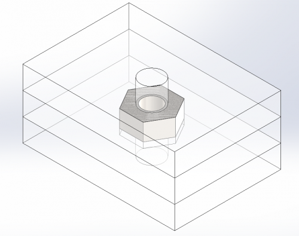
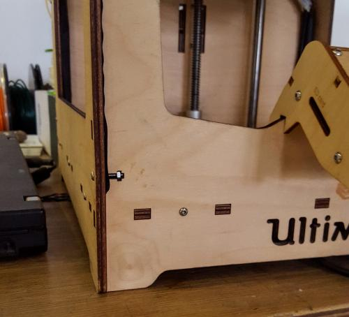
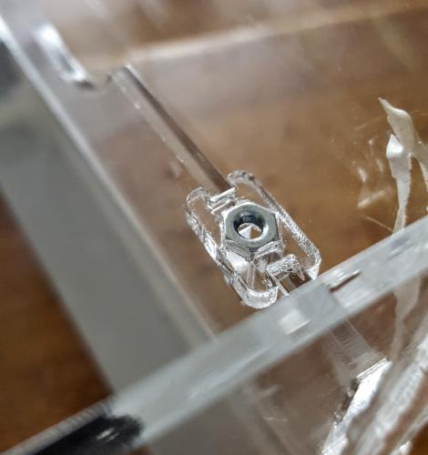
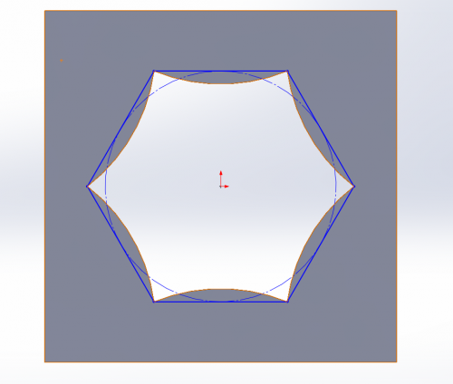

Life's easy when you prototype, you can glue stuff together, just use MDF, and there are no worries in the world!
But what if you want to be able to repeatedly open and close your project? Then you look towards the tried and true solution of nuts and bolts. Unfortunately, nuts are not trivial to add. So I'm going to go thru 3 different ways to add nuts to a laser cut project. (a great guide to add nuts to 3D printed projects is found on Form Labs' website).
Method 1: Simple Sandwich
This is a pretty simple method, just a sandwich of 3 layers of whatever material you are using.

as you can see it's two layers that make sure the nut does not move up or down (and have 3mm holes to let your bolt thru) and one layer that keeps the nut from sliding around (by having a hexagonal cut the size of the nut).
Notes: be careful when using this design as it has very little support in the direction of the bolt, also this will only work with nuts that are smaller than the layers (check the heights of your nuts).
Method 2: The lowercase 't'
This method is used very often, even on actual 'prosumer' products like the Ultimaker.

This is a very simple way to add nuts, just cut out a 't' with the body of the t holding the bolt and the cross on the t holding the nut
Note: this does not really hold the nut in place, works best when on wood with tight tolerance (so that the nut is forced into the wood and remains in place).
Method 3: Melting Down
This method only works with acrylic or a similar plastic, and involves using a soldering iron to melt the nut into the plastic. Attempts to film the melting process resulted in some close calls, so be careful. It's as simple as placing the nut on the tip of the iron and then sticking both into the melt point. This could be done in a panel, or in a smaller 'nut carrier' which is then glued onto the frame of your prototype. The latter is shown below.

As you can see, there's an 'H' shaped piece of plastic that a nut was melted into, which was then glued onto a strut. This allowed the bottom of the ASCL NO2 sensor to stay firmly attached which allowing the sides to be water tight.
When cutting out the nut carrier, you want a shape that lets you align the nut, but also has plastic that the nut can melt into, after some brief testing, I prefer the following shape, as it allows you to align the nut on the corners while providing plastic on the sides to melt the nut into.

Those are 3 methods for including nuts in your projects. Choosing the 'irhgt' method is a combination of what your project is, what you're trying to do, personal preference, and trial and error. Hopefully this is a useful jumping off point.

This work is licensed under a Attribution Share Alike Creative Commons license